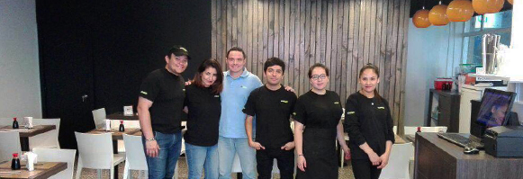
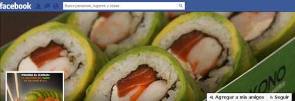
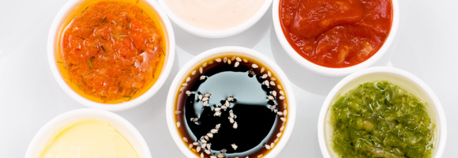

INAUGURAMOS NUEVO LOCALSAN ANTONIO 263, SANTIAGO CENTRO
Te invitamos a conocer nuestro nuevo local ubicado en pleno centro de Santiago, teléfono (02) 633 30 90. La misma calidad de siempre, en un nuevo local. Ven a visitarnos!


PROXIMAMENTE, SABORES THAI EN YOKONO
Podrás disfrutar de nuestros deliciosos productos Thai, Hot Gohan Thai & Sopa Thai. No dudes en probarlos!
SIGUENOS EN FACEBOOK
Síguenos en Facebook y mantente al tanto de nuestras novedades, ofertas y promociones.


PRUEBA ESTAS INCREIBLES NOVEDADESNUEVAS SALSAS
Hemos creado nuevas delicias para tu deleite...
¡Pide las nuevas salsas de Mostaza Miel o Mayonesa Eneldo para acompañar tus Gohan o Ensaladas!
© 2013 YOKONO